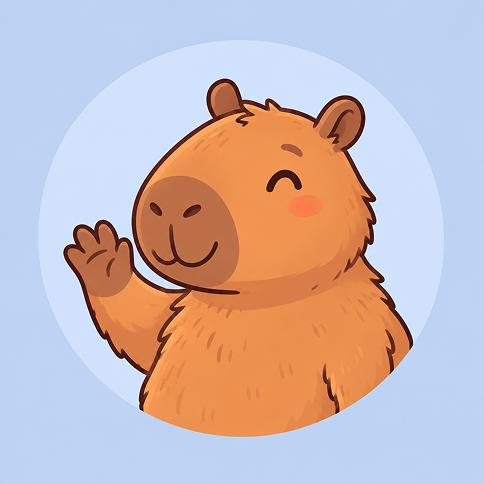

Responda às 5 perguntas rápidas para receber recomendações personalizadas para o seu perfil.
Responder quiz agora →
Seu perfil identificado
Explorador(a) de Tecnologia & Inovação
Suas respostas mostram afinidade com lógica, criação digital e resolução de problemas usando tecnologia. Esse é um ótimo momento para começar em áreas como Desenvolvimento Web, UI/UX Design ou Dados por meio de cursos gratuitos.

Perfil: Explorador(a) de Tecnologia & Inovação
Instituições, cursos e projetos de tecnologia para você
Selecionamos iniciativas gratuitas e confiáveis na área de tecnologia alinhadas ao seu momento atual para você aprender, praticar e dar o próximo passo.